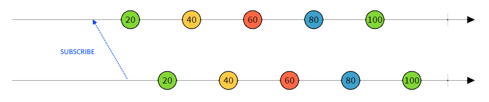
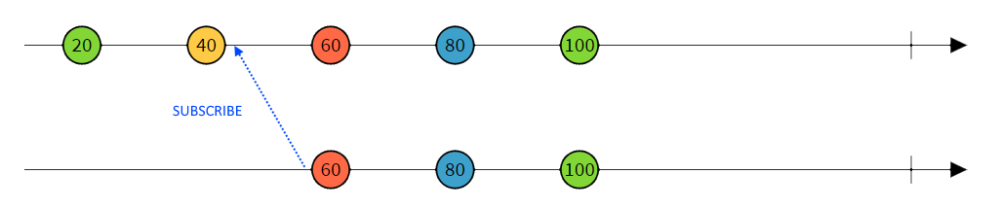

Reactive programming with
ReactiveX
Agenda
- Basics
- Event handling
- Multithreading
- Combining observables
- Summary
- Questions
Imperative programming
forces programmers to write “how” a program will solve a certain task
Functional programming
is a programming paradigm where you model everything as a result of a function that avoids changing state and mutating data
Reactive programming
is an asynchronous programming paradigm concerned with data streams, where everything can be a stream of data
Reactive vs Imperative
In reactive programming observables/streams emit data, and PUSH (send) it to the subscribers
In imperative programming you explicitly PULL (request) data
Reactive Extensions
ReactiveX is a library for composing asynchronous and event-based programs by using observable sequences
Observable & Observer
In ReactiveX an observer subscribes to an Observable. Then that observer reacts to whatever item or sequence of items the Observable emits
More
Cold observable
waits until an observer subscribes to it before it begins to emit items, and so such an observer is guaranteed to see the whole sequence from the beginning

Hot observable
may begin emitting items as soon as it is created, and so any observer who later subscribes to that Observable may start observing the sequence somewhere in the middle

Creating observables
- Create - custom observable
- From - arrays, events, callbacks
- Just - single item observable
- Empty - zero elements observable
- Interval - time based observable
Rx is single-threaded by default
Reactive Extensions allows to:
- treat different asynchronous sources same way
- easily combine multiple asynchronous sources
- write clean and testable concurrent code
- model any behaviour in declarative way